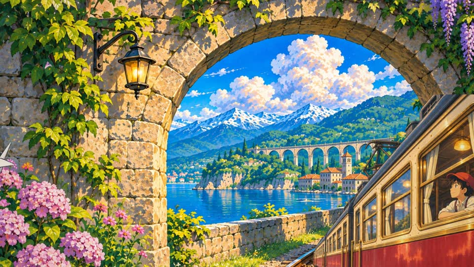
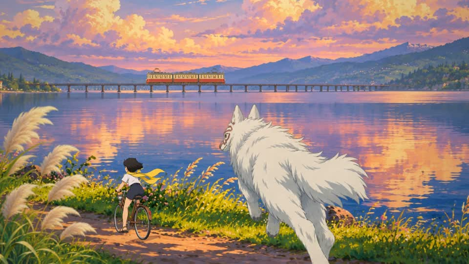

Experiment · · 2 min read
Recreating a Ghibli-style short film in code, with a giant white wolf
We set out to rebuild a 38.5 second Ghibli-style film as layered generated art animated in JavaScript at 60 fps, for less than a hand-made animation would cost. The twist is a giant white wolf, a nod to Princess Mononoke.
The final cut, 720p, 38.5 s. The audio is a procedural drone, not music.
How it was built
- About 70 plates and sprites came from ChatGPT image generation.
- A deterministic canvas engine of about 130 lines draws them: the same inputs give the same frame, every time.
- Each shot is one scene file. Builders on Haiku and Sonnet were fanned out, one per scene.
- Independent Fable review rounds compared our frames, one by one, against the original film and sent back fixes.
- Playwright renders the frames and ffmpeg encodes them.




What went wrong
- Version 1 was rejected as far worse than the original: no zoom, doubled tracks, static characters.
- The image quota ran out, so the final fixes were code-only. No plate was regenerated after that.
- The boy does not look the same across his three shots.
- The audio is a procedural drone, not a score.
Code
github.com/chimera-defi/ghibli-astra
The repo is private until published.